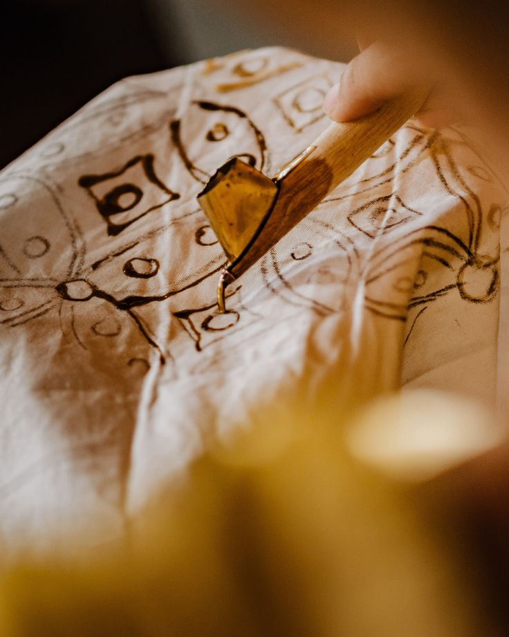
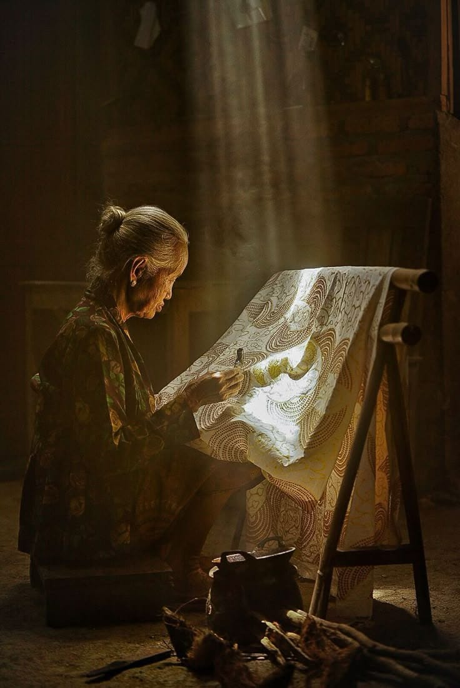

Batik adalah teknik menghias kain menggunakan lilin yang telah dikenal sejak lama di Indonesia. 2009: Diakui UNESCO sebagai Warisan Budaya Dunia Lebih dari 2,5 juta pengrajin di seluruh Indonesia Batik adalah hasil karya bangsa Indonesia yang merupakan perpaduan antara seni dan teknologi oleh leluhur bangsa Indonesia. Batik Indonesia dapat berkembang hingga sampai pada suatu tingkatanyang tak ada bandingannya baik dalam desain/motif maupun prosesnya. Corak ragam batik yang mengandung penuh makna dan filosofi akan terus digali dari berbagai adat istiadat maupun budaya yang berkembang di Indonesia. Motif Batik menurut Kamus Besar Bahasa Indonesia, motif adalah corak atau pola. Motif adalah suatu corak yang di bentuk sedemikian rupa hinga menghasilkan suatu bentuk yang beraneka ragam.
Motif batik adalah corak atau pola yang menjadi kerangka gambar pada batik berupa perpaduan antara garis, bentuk dan isen menjadi satu kesatuan yang mewujudkan batik secara keseluruhan. Motif-motif batik itu antara lain adalah motif hewan, manusia, geometris, dan motif lain. Motif batik sering juga dipakai untuk menunjukkan status seseorang.

Asal Usul Batik sudah ada di Indonesia sejak berabad-abad lalu, diperkirakan berkembang pesat pada masa kerajaan-kerajaan Hindu-Buddha di Jawa, sekitar abad ke-6 hingga ke-7 Masehi. Kata "batik" sendiri berasal dari bahasa Jawa, yaitu amba (menulis) dan titik (titik), yang berarti "menulis titik-titik. Awalnya, batik merupakan kerajinan eksklusif istana, dipakai oleh para raja, bangsawan, dan keluarga keraton — terutama di Yogyakarta dan Surakarta. Motif-motifnya memiliki makna filosofis dan spiritual yang mendalam, bahkan beberapa motif hanya boleh dikenakan oleh kalangan tertentu. Perkembangan dari Masa ke MasaMasa Kerajaan (sebelum abad ke-17) Batik berkembang di lingkungan keraton Mataram, Yogyakarta, dan Surakarta. Motif seperti parang, kawung, dan sido mukti lahir pada era ini dan sarat makna filosofis. Kolonial Belanda (abad ke-17–19) Perdagangan membawa batik keluar dari tembok istana. Pengaruh budaya asing, termasuk Tionghoa, Arab, India, dan Eropa, mulai memengaruhi motif batik, melahirkan gaya baru seperti batik pesisir di kota-kota pantai seperti Pekalongan, Cirebon, dan Lasem. Awal Abad ke-20 Muncul batik cap (menggunakan cap tembaga/stempel) yang memungkinkan produksi lebih cepat dan massal, sehingga batik semakin terjangkau oleh masyarakat umum. Pasca KemerdekaanBatik menjadi simbol identitas nasional. Para pemimpin seperti Soekarno sering mengenakan batik dalam acara-acara resmi sebagai bentuk kebanggaan budaya.
Batik menjadi simbol identitas bangsa yang diakui dunia internasional.
Setiap motif mengandung filosofi dan nilai-nilai luhur yang mendalam.
Digunakan dalam acara formal maupun non-formal di berbagai kesempatan.